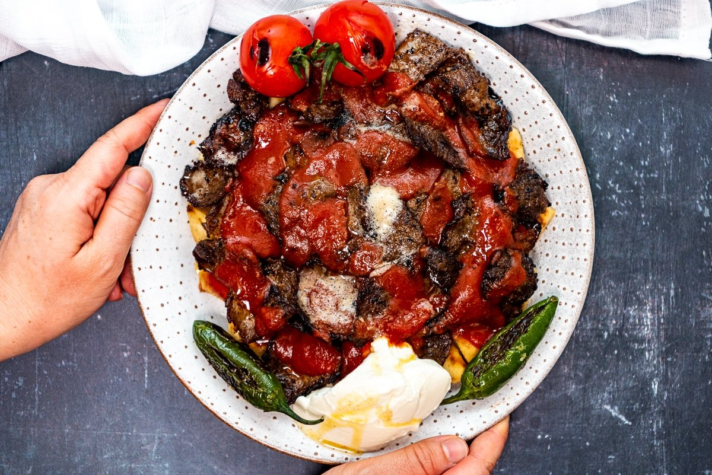

Iskender Kebap

What Is Iskender Kebap
Iskender kebab is just another traditional Turkish way of serving
döner. This dish mainly consists of döner meat which is made from
thinly sliced and cooked ground lamb or beef. This meat is unique in
and of itself as it gets cooked vertically. It is served on top of
pide bread and tomato sauce, accompanied by yogurt and topped with
extra tomato sauce and browned melted butter.
Meaning of Iskender
Iskender kebab, or sometimes referred to as Bursa kebab, is named
after the founder of this mouth-watering dish, Iskender Efendi. His
family owned and operated a restaurant when Iskender suggested
baking meat vertically. Ever since 1867 this dish has only increased
in popularity and has achieved fame across the globe!
Ingredients
Doner Meat:
- 1 large onion
- 1 kilo/2lb ground beef (15% fat)
- 2 teaspoons salt
- ½ teaspoon black pepper
- ½ teaspoon cumin
- 1 teaspoon oregano
- 1 teaspoon garlic powder
- ½ teaspoon isot pepper (or paprika)
- 4 tablespoons yogurt
- 2 tablespoons milk
- 2 tablespoons butter to cook döner
Tomato Sauce:
- 3 tablespoons butter
- 2 tablespoon tomato paste
- 2 cups passata or tomato juice/puree
- ½ cup hot water
- ½ teaspoon black pepper
- 1 teaspoon salt
To Serve:
- 4 cups cubed pide bread
- 1 cup yogurt
- 4 tomatoes
- 4 green peppers
- 3 tablespoons butter, melted and sizzling
Instructions
Doner Meat:
-
Puree the onion in a food processor. Sieve its juice into a
large mixing bowl. We just need the juice.
-
Put the ground beef, döner kebab seasoning, salt, yogurt and
milk in the same bowl. Combine them well using your hand. Give
it a log shape.
- Transfer it on a baking paper and wrap it tightly.
-
Let it rest in the fridge for 2 hours. Then transfer it to the
freezer and let it sit there for 8 hours or overnight. You can
remove it from the freezer when you are ready to cook.
Tomato Sauce:
Melt butter in a saucepan. Add in tomato paste and tomato
juice/puree or passata. Pour water over these. Add in salt and
pepper and cook over medium heat until it boils. Reduce the heat to
the lowest and let it simmer for 15-20 minutes.
Cooking Doner:
-
While your sauce is simmering, you can cook the doner. Remove it
from the freezer and let it sit on the counter for 5-10 minutes.
Hold the döner log with a piece of baking paper and carefully
make large thin slices (like shaving) using a sharp knife.
-
Heat one teaspoon butter in a non stick pan over high heat. Line
sliced döner pieces in a single layer and cook both sides until
nicely brown.
-
Cook döner in batches and never overload the pan. You can
transfer the cooked pieces on a plate and finally put them all
the pan just to heat a bit right before serving.
Heating Pide Bread:
While you are cooking the doner, you can heat chopped pide bread in
a pan with a splash of water. We want them soft, so you can add a
little more water if needed.
Assemble The Kebab:
- Place heated pide bread chunks on a plate.
- Drizzle a little tomato sauce over them.
- Top it with cooked doner meat (as much as you want).
- Pour a generous amount of tomato sauce over meat.
-
Place a dollop of yogurt, roasted or raw tomatoes and green
peppers on the side of the meat on the same plate.
- Drizzle sizzling butter over these and serve immediately.